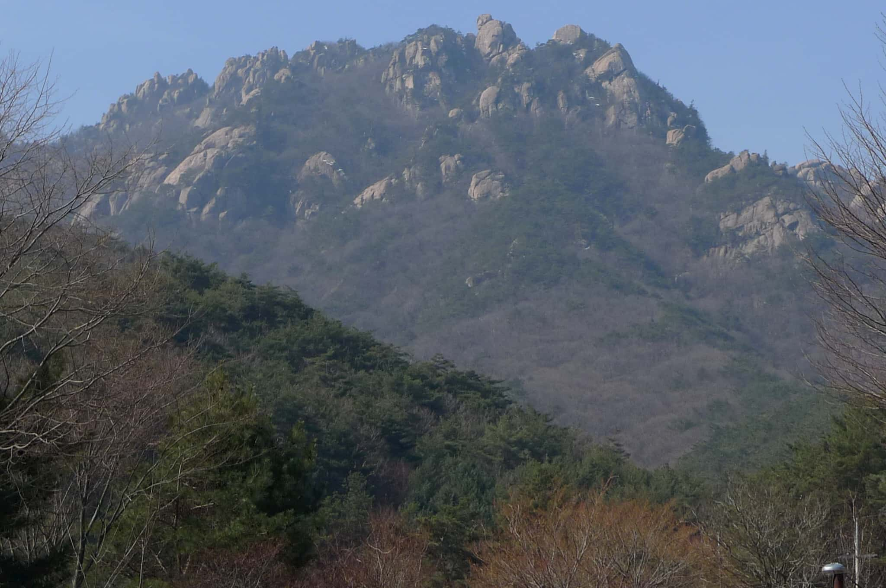
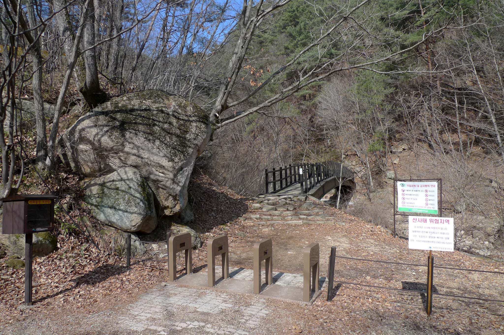
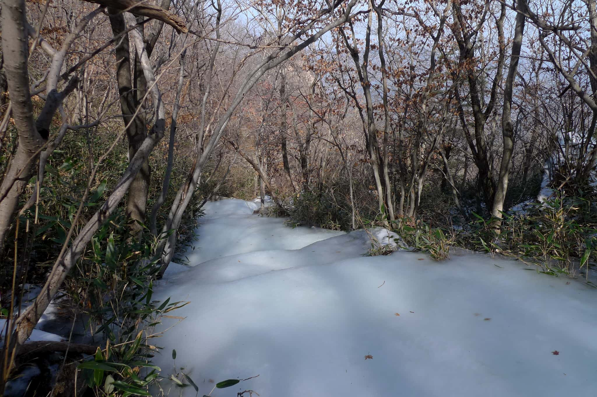
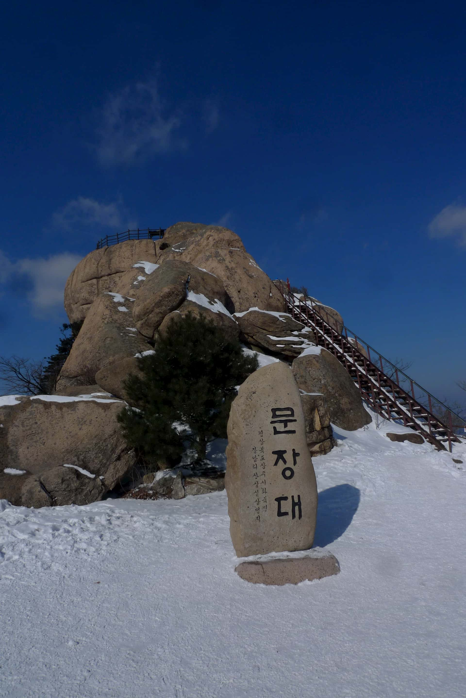
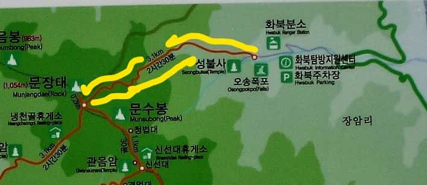
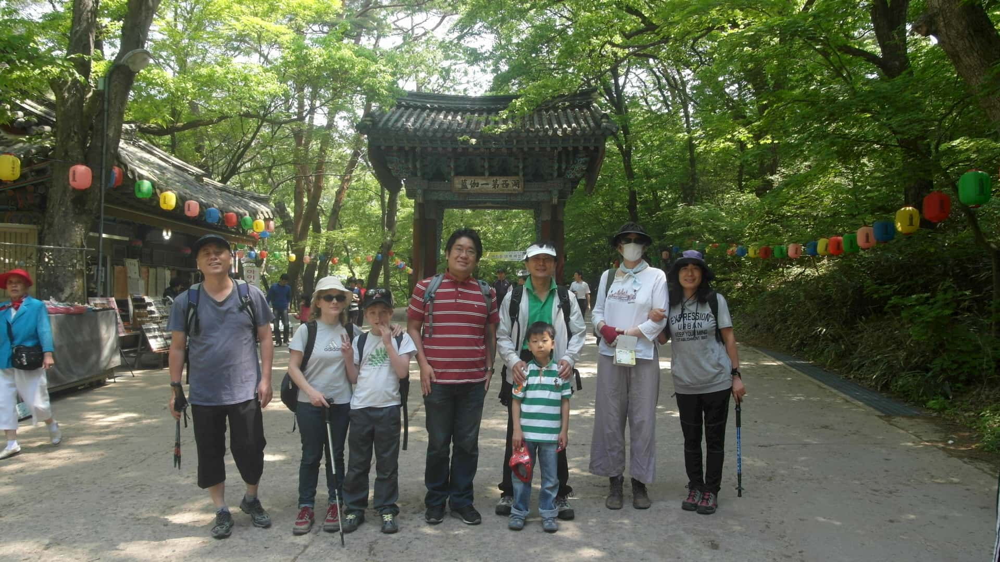

Short Eastern hike description

First a reminder that you will be hiking in one of Korea’s National Parks and they have strict rules particularly regarding
pets such as dogs which are not allowed in the parks as they can disturb the park wildlife. I will describe a hike up this
beautiful mountain located in the Songnisan (속리산국립공원) National park, established in 1970, from the east side. This is not
the easiest way to hike this mountain as the trail is very steep for most of its distance since it is only a little over
three Km long to this beautiful peak of an impressive 1054 meters. On your hike please note the pink coarse grained rocks
that form the foundation of this famous mountain. It is granite and is an igneous rock that is formed deep in the earth’s
crust. This coarse grained rock is one of the reasons for this mountain’s existence as it is relatively resistant to
erosion.
Eastern entrance

At the beginning of the trail is the well-known SeongBul temple (성불사) which is well worth a visit as you are passing by
anyway and the main destination for many people visiting the Songnisan (속리산국립공원) National Park who enter from this side of
the national park. Due to its massive size of 275 square kilometers, there are several entrances to Songnisan National Park
(속리산국립공원). We parked for this hike in the 화북주차장 parking lot located in a Northeast direction from the peak of MunJangDae
(문장대). Also on the way to the summit using this eastern path is the waterfall known as 오송폭포. We had to use our own two feet
to climb the mountain but back in 1464, King Sejo (세조) was carried up in a palanquin chair by his servants, without the
benefit of strategically placed ropes……or so the story goes. On the summit, (which he is said to have named) he had his
scholars read and compose poetry, supposedly inspired by the postcard perfect scenery.
Peaks of Songnisan National park (속리산국립공원)
Icy paths in the winter

The trail starts at the parking lot shown on the map in the following paragraph. As it is a National Park, a small admission
is charged as you pass by the ranger station. Initially, the trail is not steep and is made up of carefully placed stones
which follow a stream which appears to follow the path. There are several intermittent bridges that cross the stream which
would be very difficult to cross during the monsoon season in Korea otherwise. As in photo shown, the stream may be covered
with ice in winter giving the appearance of a mini glacier making its way through the sleepy forest. Even when little snow
has fallen this location is difficult without crampons (isen in Korea) because of the presence of ice during winter so
exercise caution in this area.
문장대 Peak

There are numerous trail signs indicating the distance to the peak along the trail so just continue up the trail that
becomes steeper as you ascent until you reach the top of the mountain. This is one of the more interesting peaks as it is
defined by a large boulder with a steel ladder that leads up to the top (see parallax picture above). On a clear day the
views from here are impressive in all directions and well worth the challenge of the hike as long as you don’t slip and fall
on the ice. When returning to the base of the mountain be very careful to take the same trail that you used to climb up as
there are numerous trails that ascend the mountain. Taking the wrong path lead you far from the parking lot where you began
the hike.
Map of the hike.

This is considered one of the must do hikes in Korea. SongNiSan National Park (속리산국립공원) receives approx. 1.5 million
visitors each year. This remote mountain with its unique rocky peak is particularly scenic, so much so that it must have
been difficult for the monks to concentrate on meditation in the scattered temples amongst the splendid scenery. There are a
number of other peaks in this range and each has its special view of the surrounding mountains. Public transportation is
quite limited in this remote sparsely populated mountain country of Central Korea, in fact the name SongNiSan (속리산) means
“remote from the ordinary world”. There is an intercity bus service (시외버스) from Daejeon 복합 bus terminal to the SongNiSan
(속리산) bus terminal via Boeun (보은) which is located at the Southwestern main entrance of the national park.
Local village

The village surrounding the bus terminal is a sizeable village with homestay style accommodation, restaurants, souvenir
shops, a campground in the summer and as well as one of Korea’s most renown temples the 법주사 BeopJuSa temple. (See above for
more information about BeopJuSa temple.) Unfortunately, there is little in the way of variety with both stores and
restaurants in the vicinity of the bus terminal with most restaurants selling the same food dishes being 불고기 정식, 산채 정식 and
산채 비빔밥 and stores selling the same souvenirs. Despite the popularity of the national park the village gives a dying
impression inhabited by mainly elderly people. A stroll through the side streets is recommended to find some out of the way
but unique places. For example one side street revealed a butcher shop that ran a small 삼겹살 (long fried strips of fatty pork
on a grill) restaurant behind the butcher shop.